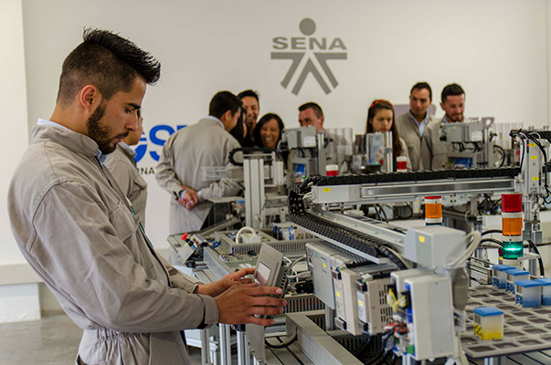

Bienvenido al Proyecto de Inducción SENA
Este proyecto presenta una solución innovadora basada en Machine Learning para optimizar el proceso de inducción y entrenamiento inicial de nuevos instructores en el Servicio Nacional de Aprendizaje (SENA).
La pregunta problema que guía este proyecto es: ¿Cómo diseñar e implementar un proceso de inducción y entrenamiento inicial para los nuevos instructores que ingresan al SENA, con el fin de garantizar su adecuada integración y desempeño desde el inicio de su vinculación a la entidad?
A través de técnicas avanzadas de inteligencia artificial, buscamos personalizar la experiencia de cada instructor, optimizar la asignación de recursos educativos y mejorar significativamente los resultados del proceso de inducción.
El Desafío de la Inducción en el SENA
Contexto Actual
El Servicio Nacional de Aprendizaje (SENA) es una institución de formación profesional integral que recibe constantemente nuevos instructores. Sin embargo, el proceso de inducción y entrenamiento inicial presenta varios desafíos:
- Falta de Personalización: Los programas de inducción suelen ser genéricos y no se adaptan a las necesidades específicas de cada instructor.
- Asignación Ineficiente de Recursos: Los recursos educativos no siempre se distribuyen de manera óptima según el perfil del instructor.
- Evaluación Subjetiva: La evaluación del desempeño inicial carece de criterios objetivos y basados en datos.
- Integración Lenta: El tiempo de integración y productividad de nuevos instructores es prolongado.
- Falta de Seguimiento Continuo: No existe un sistema de monitoreo continuo del progreso y desempeño.
Impacto
Estos desafíos resultan en una menor eficiencia operativa, mayor rotación de personal y una experiencia de inducción subóptima para los nuevos instructores.

Fundamentos de Machine Learning
Machine Learning es una rama de la Inteligencia Artificial que permite a los sistemas aprender y mejorar su desempeño sin ser explícitamente programados. A continuación, se presentan los conceptos clave:
¿Qué es Machine Learning?
Machine Learning es un conjunto de técnicas que permiten a los algoritmos aprender patrones en los datos y hacer predicciones o decisiones basadas en esos patrones.
Tipos de Machine Learning
- Aprendizaje Supervisado: El modelo aprende de datos etiquetados (entrada-salida conocida).
- Aprendizaje No Supervisado: El modelo identifica patrones en datos sin etiquetar.
- Aprendizaje por Refuerzo: El modelo aprende mediante interacción y recompensas.
Aplicaciones en Educación
Machine Learning se utiliza para personalizar el aprendizaje, predecir desempeño, recomendar recursos educativos y optimizar procesos administrativos.
Flujo de Trabajo de Machine Learning
Recopilación de Datos
Preparación de Datos
Selección del Modelo
Entrenamiento
Evaluación
Implementación
Modelo de Machine Learning Propuesto
El modelo propuesto utiliza técnicas de Machine Learning para optimizar el proceso de inducción de instructores SENA. El modelo integra múltiples componentes:
1. Sistema de Recomendación Personalizado
Utiliza algoritmos colaborativos y basados en contenido para recomendar recursos educativos, módulos de entrenamiento y mentores según el perfil del instructor.
2. Predicción de Desempeño
Mediante modelos de regresión y clasificación, predice el desempeño esperado del instructor durante la inducción y en sus primeros meses de trabajo.
3. Análisis de Integración
Identifica factores clave que influyen en la integración exitosa y proporciona insights para mejorar el proceso.
4. Monitoreo Continuo
Realiza seguimiento en tiempo real del progreso del instructor y ajusta las recomendaciones dinámicamente.
Arquitectura del Modelo
Entrada: Datos del instructor (perfil, experiencia, competencias, preferencias)
Procesamiento: Algoritmos de ML (clustering, clasificación, regresión)
Salida: Recomendaciones personalizadas, predicciones de desempeño, plan de inducción optimizado
Implementación y Resultados Esperados
Fases de Implementación
Fase 1: Recopilación y Preparación de Datos
Se recopilan datos históricos de instructores previos, incluyendo perfiles, resultados de inducción y desempeño. Los datos se limpian, normalizan y preparan para el entrenamiento del modelo.
Fase 2: Desarrollo del Modelo
Se desarrollan y entrenan múltiples modelos de ML, se validan y se selecciona el de mejor desempeño. Se utilizan técnicas de validación cruzada para garantizar la robustez.
Fase 3: Integración en Plataforma
El modelo se integra en una plataforma web o aplicación que los coordinadores de inducción pueden utilizar para gestionar el proceso de forma optimizada.
Fase 4: Pruebas Piloto
Se realiza una prueba piloto con un grupo de nuevos instructores para validar la efectividad del modelo en condiciones reales.
Fase 5: Despliegue y Monitoreo
Se despliega el modelo a nivel institucional y se monitorea continuamente su desempeño, realizando ajustes según sea necesario.
Resultados Esperados
Reducción del Tiempo de Inducción
Se espera reducir el tiempo promedio de inducción en un 30-40% mediante la personalización y optimización del proceso.
Mejora en el Desempeño
Los instructores que completen el proceso optimizado mostrarán un desempeño 25-35% superior en sus primeros meses.
Mayor Retención
Una mejor experiencia de inducción resultará en una mayor retención de instructores, reduciendo la rotación de personal.
Eficiencia Operativa
La automatización y optimización del proceso liberarán recursos que pueden dedicarse a otras actividades estratégicas.
Tecnologías Utilizadas
Conclusiones y Futuro
Hallazgos Principales
Este proyecto demuestra que la aplicación de Machine Learning en el proceso de inducción de instructores SENA es viable y prometedora. Los principales hallazgos incluyen:
- La personalización basada en datos mejora significativamente los resultados de la inducción.
- Los algoritmos de ML pueden identificar patrones de éxito que no son evidentes para los evaluadores humanos.
- La automatización de recomendaciones libera tiempo para interacciones más significativas.
- El monitoreo continuo permite intervenciones tempranas cuando es necesario.
Impacto Potencial
La implementación exitosa de este modelo podría transformar la forma en que el SENA gestiona la inducción de instructores, resultando en una institución más eficiente, instructores mejor preparados y, en última instancia, estudiantes que reciben una educación de mayor calidad.
Futuras Líneas de Investigación
Integración de Análisis de Sentimientos
Utilizar procesamiento de lenguaje natural para analizar feedback y evaluar la satisfacción del instructor.
Modelos Predictivos Avanzados
Desarrollar modelos de deep learning para predicciones más precisas del desempeño a largo plazo.
Gamificación Inteligente
Incorporar elementos de gamificación adaptativa basada en ML para aumentar el engagement.
Análisis Comparativo Institucional
Extender el modelo a otros centros SENA para análisis comparativos y mejora continua.
Acerca de Este Proyecto
Autor
Belisario Azuero Portacio
Instructor SENA
Centro de Comercio, Medellín
Año de Realización
2025
Descripción del Proyecto
Este proyecto presenta una solución innovadora que combina Machine Learning con procesos educativos para optimizar la inducción de nuevos instructores en el SENA. El objetivo es garantizar una integración más rápida, efectiva y personalizada de los nuevos miembros del equipo docente.
Objetivos Específicos
- Diseñar un modelo de Machine Learning adaptado a las necesidades de inducción del SENA.
- Implementar un sistema de recomendación personalizado para recursos educativos.
- Desarrollar herramientas de predicción de desempeño basadas en datos.
- Crear una plataforma que facilite la gestión del proceso de inducción.
- Evaluar el impacto del modelo en la eficiencia y satisfacción de instructores.
Contacto y Colaboración
Para más información sobre este proyecto o para colaborar en futuras fases de desarrollo, por favor contacte al autor a través del SENA Centro de Comercio en Medellín.